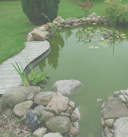

Home
About
Gallery
Blog
Contact
GREEN CLUB - Afe Babalola
University
Our Gallery
All the beautiful images in our gallery show the wonderful projects we have embarked on
Vivamus at magna
Phasellus accumsan
Aliquam nibhi
Etiam non rutrum
Suspendissttitor

Enim non lacus
Curabitur rutrum
Maecenas esto
Follow us on Instagram
greenclubnigeria
Happy Earth Day everyone! 🌍💚 Are you lookin
We made a tour of the reuse center (@remainderspas
Happy International Women's Day to all the amazing
Did you know that waste cooking oil theft is a rea
Want to know more about the global carbon market a
Want to make a difference in the fight against pla
Have you considered using biogas as a cooking fuel
An article on the “Clean Energy Revolution in th
The Waste to Energy industry was valued at $35.1 b
How a Nigerian Company Manufactures Valuable Produ
Did you know that one of China’s richest women,
How to be a part of the Trillion Dollar Global Was
We are currently in a climate crisis because we co
This episode of the Sustainability Nuggets Podcast
How to Protect Yourself from the Black Soot in Por
Do you know the air quality index of your city? As
“A 4-year-old Child in Port Harcourt City has ne
Living in a City Covered in Black Soot The residen
Our podcast "Sustainability Nuggets" just got feat
I had a great time at the just concluded Global Wa
Load More...
Follow on Instagram


![Happy Earth Day everyone! 🌍💚
Are you looking for ways to get involved in the fight for environmental sustainability? Check out my latest blog post on how you can make a difference in your job and everyday life! From implementing sustainable practices to supporting businesses that prioritize sustainability, there are plenty of ways to align your passions with environmental sustainability. And for more inspiration and insights from thought leaders and activists in the sustainability space, be sure to follow the "Sustainability Nuggets" podcast. Let's work together to create a more sustainable and just world for ourselves and future generations.
Click on link in bio to read.
Follow @greenclubnigeria to keep up with our projects.
🍀Follow @sustainabilitynuggets for podcast updates.
#EarthDay #Sustainability #ClimateAction
Author: @_tosynesther](https://www.greenclubnigeria.com/wp-content/plugins/instagram-feed/img/placeholder.png)
{kind=link}
{kind=link}
{kind=link}
{kind=link}